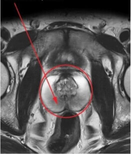
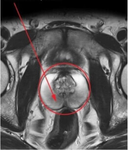

Emanuel Costa , escreveu
Especialista, urologista
Experiência: 8 anos
Registado: 3 de dezembro de 2013

Colegas, eu preciso de ajuda! Pela primeira vez em 8 anos deparei-me com este tipo de problema. Um paciente meu, um homem de 43 anos, sofre de prostatite crónica há 6 anos. Nós tentamos tudo o que podíamos - antibióticos, homeopatia, terapia e massagens. Isso ajuda apenas por um mês, depois os sintomas voltam. Como conseguir uma remissão estável? O que vocês usam para tratar casos tão complicados? Por favor, partilhem os vossos segredos e conhecimentos profissionais.
 

Diga-me, o seu paciente está a fazer dieta? Talvez esta seja a razão pela qual o seu tratamento seja ineficaz? É essencial que ele desista de alimentos gordurosos, condimentados e fritos.
Claro, foi a primeira coisa que discutimos com ele. O meu paciente segue as recomendações como deveria. Mas por alguma razão, elas não funcionam, ele não se sente melhor, vejo-o a sofrer e está à beira do divórcio...
Casos como este exigem uma massagem profissional e uma terapia individual adequada com o uso dos antibióticos mais modernos. É muito provável que o seu paciente tenha hipotermia na área dos órgãos pélvicos (às vezes, é o suficiente se sentar no chão no verão para obtê-la), e, é por isso, que esta doença volta para ele.
Colegas, o vosso tratamento está tão desatualizado. Porquê envenenar os vossos pacientes com antibióticos? Deixem esses medicamentos para a recuperação após a cirurgia e casos negligenciados. Eu voltei recentemente da conferência internacional de andrologistas, onde os problemas de prostatite e os métodos do tratamento foram muito ativamente discutidos. Sérgio Oliveira, o desenvolvedor de um produto exclusivo com uma composição completamente natural, falou connosco. Ele citou dados de estudos clínicos que provaram a sua elevada eficácia em comparação com outras opções de tratamento.
Jorge, tudo parece perfeito, até nos mostras fotos, isso é ótimo. Mas não mencionas o nome do produto ou onde comprá-lo - porquê?
Peço desculpa, eu esqueci-me. O produto chama-se . Na conferência, os desenvolvedores revelaram-nos o segredo de que, devido à alta concorrência e às margens, o remédio não estará disponível na rede de retalho das farmácias. Apenas os especialistas podem encomendar o , assim todos os participantes da conferência receberam o seu próprio link para o site do fabricante . Ao fazer o pedido através deste link, o produto é entregue em qualquer região em apenas uma semana. Alguns dos meus pacientes já compraram o e estão prontos para experimentá-lo.
Qual é a composição do produto?
O produto é completamente natural e não causa efeitos secundários. Ele contém ingredientes como extrato de Opuntia ficus-indica, espargos, raiz de gengibre, aloé vera e citrato de zinco. Para saber mais sobre o produto visitem o o site do fabricante da empresa.
Casos como este exigem uma massagem profissional e uma terapia individual adequada com o uso dos antibióticos mais modernos. É muito provável que o seu paciente tenha hipotermia na área dos órgãos pélvicos (às vezes, é o suficiente se sentar no chão no verão para obtê-la), e, é por isso, que esta doença volta para ele.
é considerado o método mais avançado de tratamento e prevenção da prostatite. O curso de tratamento é projetado para um mês. Repita se necessário a cada seis meses - isso ajudará a melhorar a condição do paciente, evitar a exacerbação da doença e períodos de inflamação aguda.
Obrigado, eu li sobre o , soube mais detalhes sobre estatísticas e comentários. Está tudo bem, a eficácia é ótima, vou começar a prescrevê-lo aos meus pacientes!
Emanuel, eu já dei o link acima, mas aqui está de novo - o site do fabricante Lembre-se, tenha cuidado, não encomende o produto em qualquer lugar, mas no site do fabricante. Ultimamente têm aparecido muitas falsificações, com o mesmo nome. Os pacientes reclamam que não ajudam. A embalagem também é diferente.
Eu posso ver agora, obrigado! Eu ajudei um paciente a encomendar o , depois escreverei sobre os resultados.
Bem, colegas, estou pronto para partilhar o meu êxito. Com a ajuda do o meu paciente que sofria de prostatite crónica, livrou-se da doença. Já passaram dois meses desde que ele se curou, nada o incomoda, ele sente-se maravilhoso, todos os resultados dos testes estão bem. Dentro de 3 meses, iremos repetir o curso apenas para ter a certeza.
Eu recomendo o a todos os meus pacientes como uma alternativa eficaz aos métodos tradicionais.
Fico feliz por tê-lo ajudado a tratar um caso tão complicado. Eu estou a usar ativamente o Men's Defense, os meus pacientes estão felizes, o remédio é 100% eficaz.